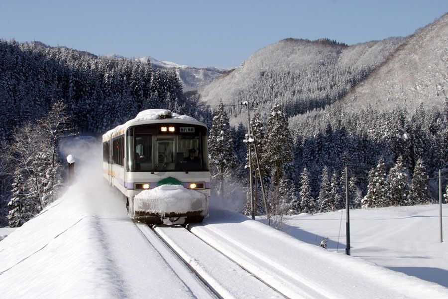
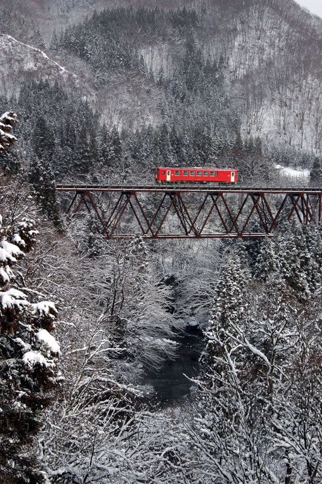
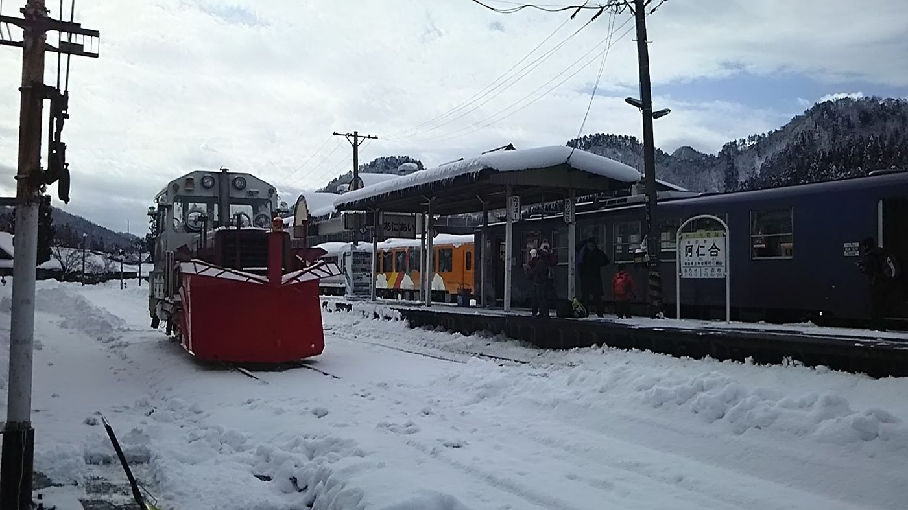
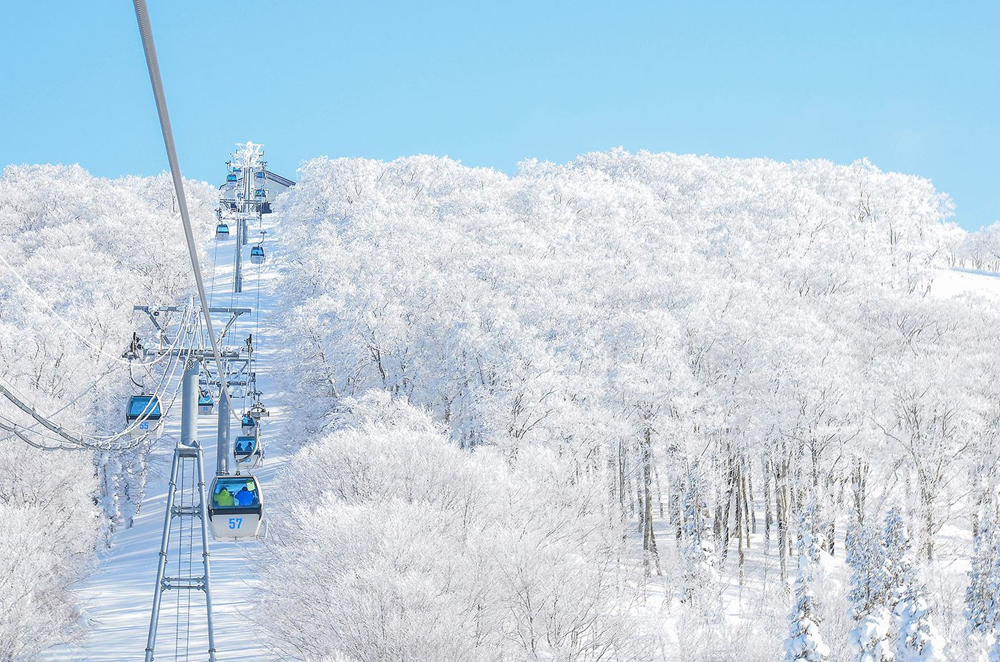
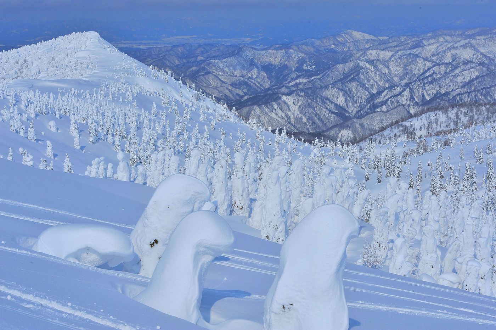
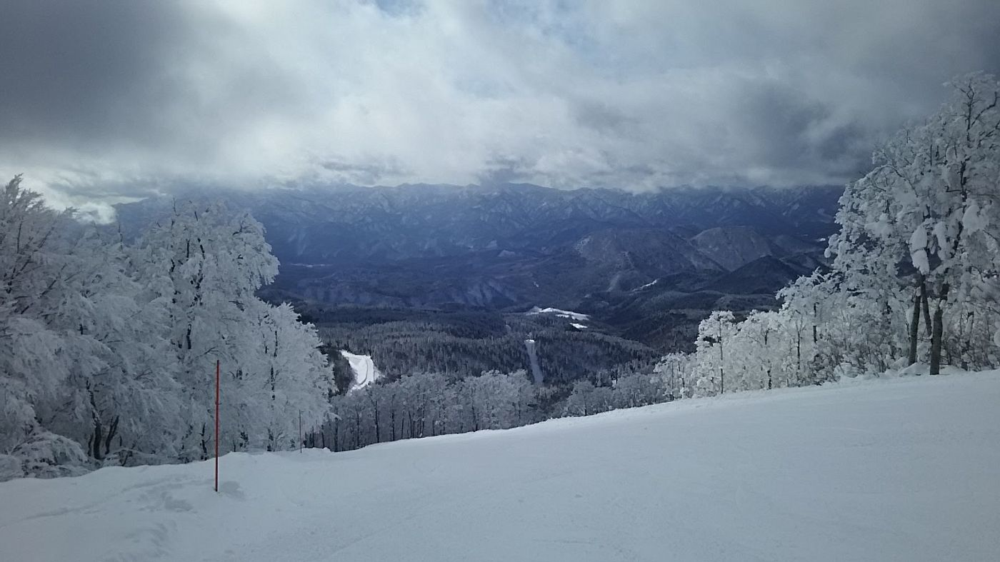

What are the snow monsters?
Every winter, freezing winds coat the Aomori fir trees near the summit of Mt. Moriyoshi with ice and snow until they become towering white shapes the Japanese call juhyo, or “snow monsters.” Mt. Moriyoshi is one of Japan’s three great snow-monster sites, alongside Zao and Hakkoda, but far less crowded.
Getting there from Tokyo
There are two main ways to reach Mt. Moriyoshi: save time by flying, or save money and enjoy the scenery by train. There is no bus to the ski resort. Either way, the last stretch is a shared taxi you book in advance.
Tokyo Haneda → Odate-Noshiro Airport (about 1 hr 10 min), then a shared taxi straight to the ski resort (about 1 hr 20 min). Higher cost: the taxi is ¥11,500 per adult.
Tokyo → Kakunodate by Shinkansen (about 3 hrs), the Akita Nairiku Line to Aniai (about 1.5 hrs), then a 25-min shared taxi (¥2,300). Longer, but the train ride through snowy countryside is an experience in itself.
Full directions, timetables and fares for both routes — step by step, with the shuttle schedule — are on the Plan your trip page.
The train ride is half the adventure
The Akita Nairiku Line runs about 94 km through the snowy heart of Akita, often with just one car. In winter the rails disappear under deep snow, cedar forests close in on both sides, and the countryside slides past almost untouched.



Aniai Station, the gateway to Mt. Moriyoshi and the heart of Matagi hunter country.
One of Japan’s longest gondola rides
Few gondolas in Japan give you this much time in the air. Stretching 3,473 m and climbing 632 m, the six-seat Ani Gondola carries you nonstop from the foot of the mountain almost to the summit: a full 20 minutes, gliding over snow-loaded forest with wide views of the mountains. From the summit station it’s a 5-minute walk to the snow-monster field, where a groomed loop of about 30 minutes winds between them.


For skiers: ride the monsters all the way down
From the summit station, long runs wind all the way back to the base. Take it slow and you get more than 30 minutes of mountain views on a single run, weaving between snow monsters on quiet slopes where you rarely have to share the piste.

Where to stay
There are only a few places to stay near the mountain, so book early, or use Kakunodate as your base.
Hotel Hush (Moriyoshi Ani no Yado)
A small, cozy hotel about 2 minutes by car from the gondola, known for hearty home cooking. Pick-up from Aniai Station is available (about 20 min).
Uttou Onsen Matagi-no-Yu
An inn in the village of the Matagi, Japan’s traditional mountain hunters. Natural hot springs, rustic mountain cooking, house-made doburoku sake, and a Matagi museum with a multilingual audio guide. Free pick-up from Ani-Matagi Station (book ahead).
Kakunodate
A historic samurai town on the Akita Shinkansen line, with many more hotels. Take the morning Nairiku Line train to Aniai.
Good to know
- Check the weather that morning. Strong wind can stop the gondola. The resort posts its operating status around 8:00 on its website and on X (@aniski001). If the gondola isn’t running, shuttle bookings aren’t taken and existing ones are refunded.
- Dress for serious cold. The summit is around 1,200 m and exposed to the wind. Wear proper winter boots, gloves, a hat and layers.
For booking shuttles, train passes and other transport tips, see Plan your trip.
Official links
Always confirm dates, times and fares with these official sources before you travel.